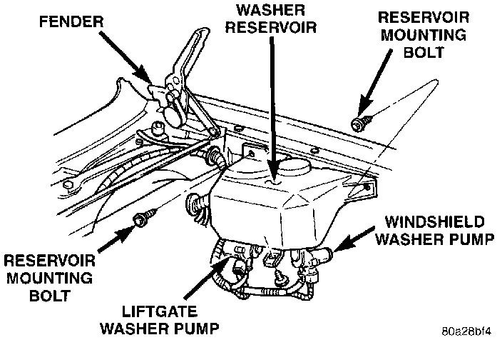

Windshield Washer Pump: Service and Repair
REMOVAL1. Disconnect and isolate the battery negative cable.
Washer Reservoir Remove/Install:

2. Remove the three screws that secure the washer reservoir to the inner fender shield.
3. Remove the washer hoses from the washer pumps and drain the washer fluid from the reservoir into a clean container for reuse.
4. Unplug the wire harness connectors from the washer pumps and the washer fluid level sensor, if equipped.
5. Use a deep socket and extension inserted through the reservoir filler neck to remove the washer pump filter/nuts from inside of the reservoir.
6. Remove the washer pumps from the reservoir.
7. Gently pry the fluid level sensor away from the reservoir. Care must be taken not to damage the reservoir.
8. Remove the rubber grommet seals from the reservoir and discard.
9. Reverse the removal procedures to install. Always use new rubber grommet seals on the reservoir.